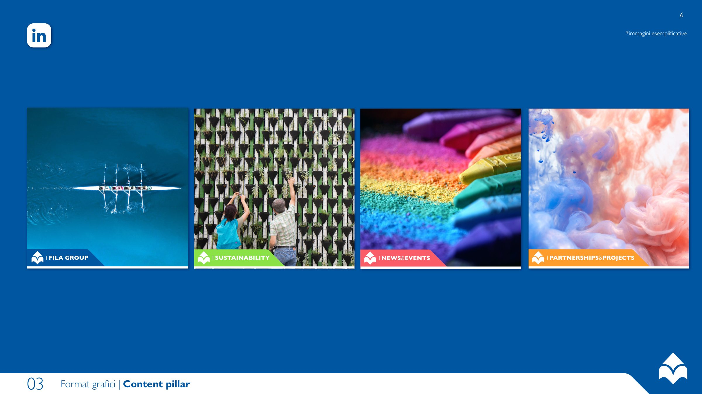
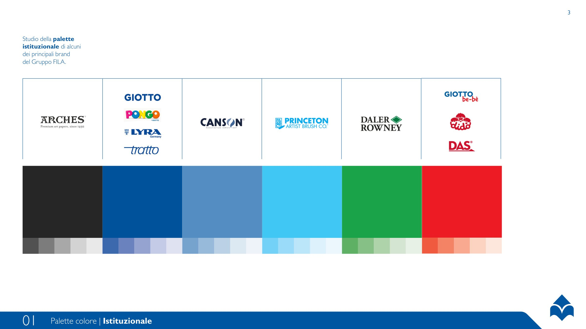
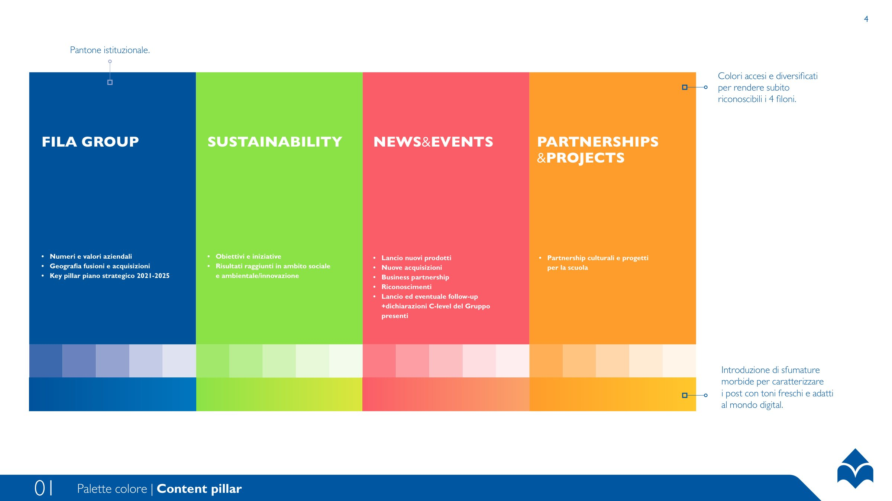
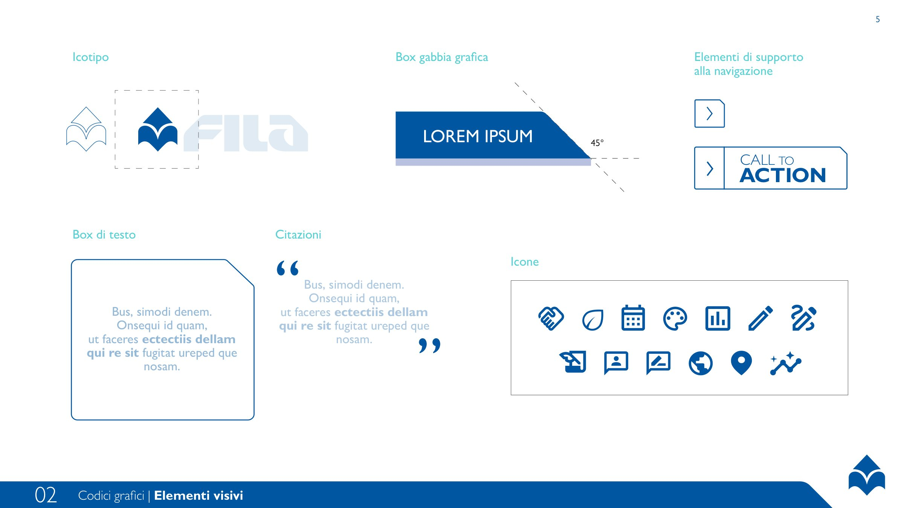
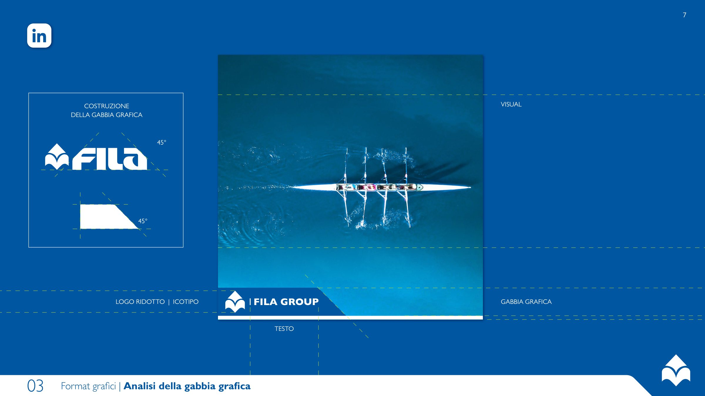
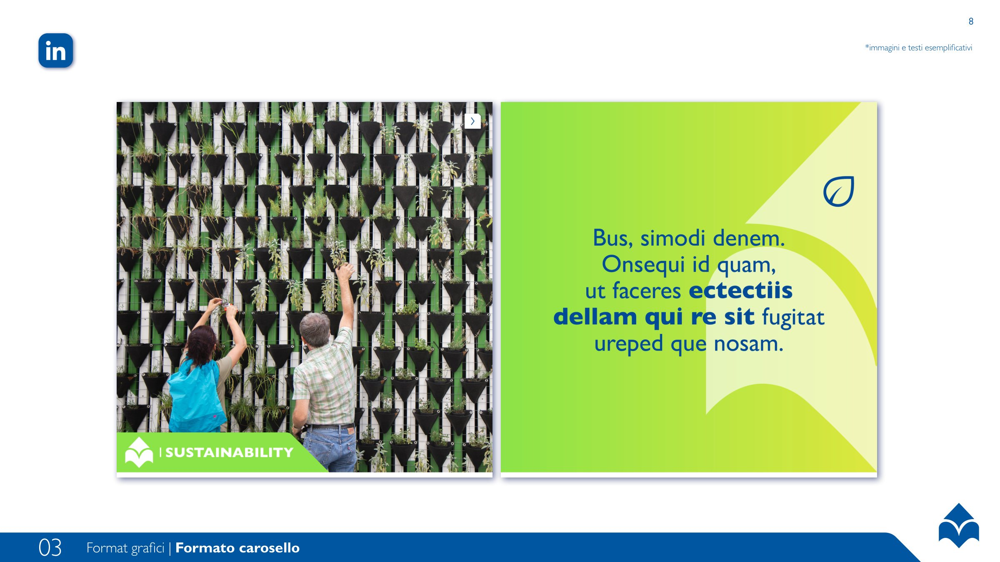
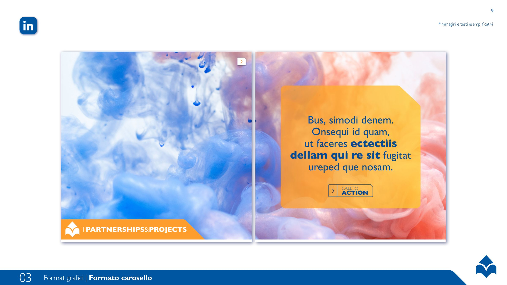
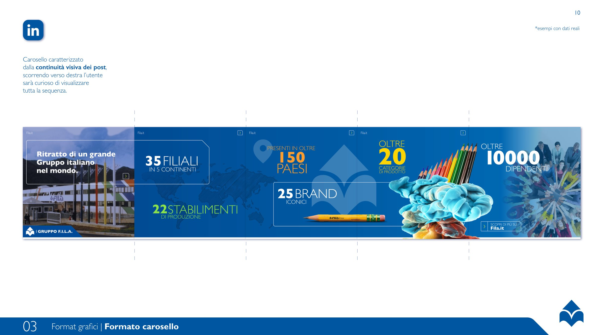
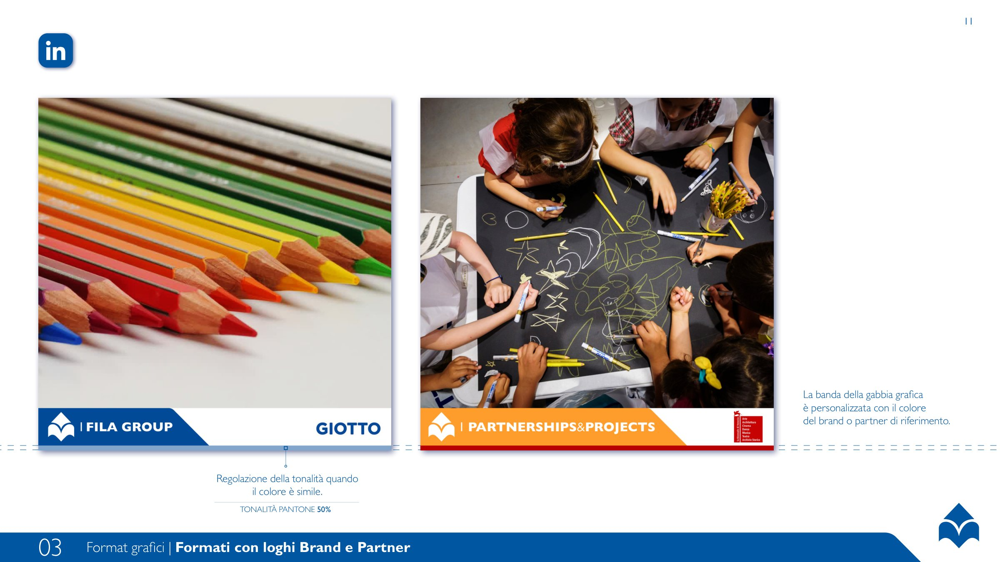
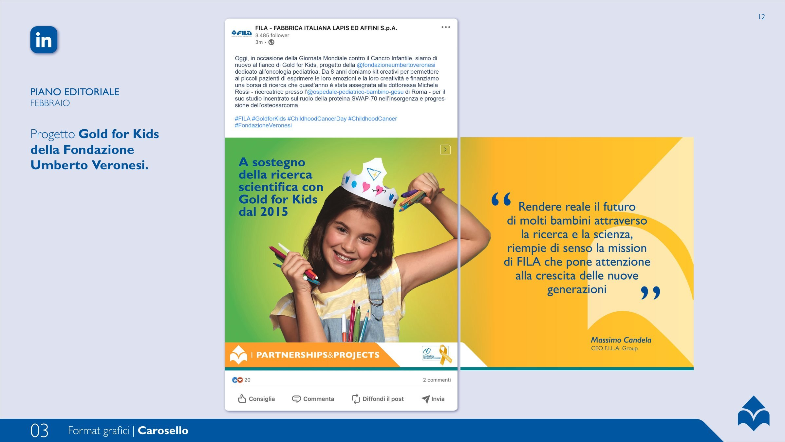

FILA Group, codici visivi per LinkedIn
Un linguaggio comune per il LinkedIn del Gruppo FILA: quattro filoni di contenuto, quattro colori e una gabbia a 45° che tiene insieme tutti i brand del gruppo.

4
filoni di contenuto, ognuno con il suo colore
45°
l’angolo della gabbia grafica, ricavato dal logo FILA
3
formati: post singolo, carosello, co-branding con brand e partner
01 — Palette
Dal blu istituzionale ai colori dei brand del gruppo, fino a quattro tinte accese per riconoscere subito ogni filone.


02 — Codici grafici
Icotipo, box di testo, citazioni, icone e una gabbia inclinata a 45°: pochi elementi, sempre gli stessi.


03 — Formati
Caroselli che invitano a scorrere, una banda che prende il colore del brand o del partner, post pronti per il piano editoriale.




